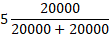
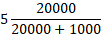
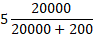
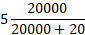

Team Charlie: Water Testing module
Introduction to Information Technology Assignment 3: Our IT Project
Table of contents
Overview
The water testing unit will offer an effective way to monitor water parameters for consumers. This will be especially enabling for those who wish to go off the grid or who live in rural areas on tank or dam water and are on a budget.
The targeted testing will give a good up to the minute indication of color and turbidity, temperature, electrical conductivity and PH. This will be coupled with an intuitive user interface for easily understandable values.
The water testing unit will indicate when further testing should be undertaken to ensure your water source is safe for consumption.
Topic
This initiative proposes to develop a simple, low-cost potable water (cite this) quality monitoring device, targeted at the consumer market. These devices are intended to be used in situations where water supplies are drawn from sources that do not have quality monitoring built in, as is the case for most rural and remote households.
With simplicity and cost effectiveness as core design requirements, this device will utilize readily available components wherever possible, including the sensing elements. The primary user interface will be kept as simplistic as possible, and the entire device is designed to allow installation and maintenance by the end user. By keeping the price point low, it is envisaged this product will become a standard issue for any household relying on an un-managed water supply.
Motiviation
In Australia, 16% (cite this) of households draw their water from sources other than a mains supply, and approximately 2 billion people globally (cite this) do not have access to a managed water source. The ability to directly monitor basic water quality parameters has the potential to reduce the social and economic costs associated with water borne illnesses.
While the core functionality will be fully self-contained, support for Internet Of Things (IoT) and smart home integration will be built in. The current trend for connected smart devices in the home will allow these devices to contribute to data collection on basic water quality across a region, which has many potential benefits. Catchment management authorities could utilize this data to build models of the water quality landscape and use this information to influence management practices or warn consumers of increased risk profile for specific water sources.
This project is relevant for several members of this team, both in the device functionality and the skills required to develop. Several members live or work in environments where water quality is an active concern, and this type of monitoring would be advantageous. The project also covers many disciplines members are passionate about, from Computer Aided Design (CAD) modeling the physical device, hardware integration, low level software development, User Interface (UI) development and interactive simulation environments.
Broadly, this project will produce a device that solves a definable problem, while developing transferable skills in a range of Information Technology (IT) disciplines.
Landscape
Municipal supply infrastructure incorporates extensive water quality testing; however, this equipment is expensive, complex, and inaccessible to household consumers. This device is imagined to be available through retail outlets, at a price point comparable to other smart home devices.
Similar devices for monitoring large bodies of water (lakes, bays, dams, etc.) (cite this) are available commercially, and this concept has been proposed for large scale monitoring in municipal settings (cite this). At the time of writing, no comparable commercial products were identified, however research discovered many instructional guides for building similar devices at home (cite this)
Detailed Description
Housing and fittings
Materials for the sensor housing were selected based on availability, service life, and cost.
- Domestic grade PVC pipe & Fittings
- This material is readily available throughout most of the world. The material has characteristics suitable for this application
- Low cost
- Does not degrade when exposed to UV light or other harsh atmospheric and environmental conditions.
- Thermally stable
- Dimensionally stable
- Available in many thickness and pressure ratings
- Complex geometries can be achieved with simple manufacturing techniques (during development)
- Well suited to large scale production using injection molding
- 316SS bolts and plugs
The sealing technique, especially at the camera and LED lens locations will require further testing during physical prototyping to develop a simple, economical and effective solution.
The main sensor body as currently designed is constructed of ~100mm (4”) PVC pipe, with commercially available threaded couplings glued into place. This fabrication technique is expected to be adequate for testing purposes, however the final product will be constructed as a single homogeneous component. Any designs intended for external testing or commercial sale will include pressure ratings in compliance with the applicable regulations.
Aims
Plans and Progress
Phase 1: Digital prototype
This phase will produce an interactive digital analogue of the final device, allowing the development team to trial ideas and test theories. It will also provide the first tangible element of the development process, enabling the development team to demonstrate the concept to potential investors in an interactive manner.
Progress on this interactive model is shown below.
User experience testing
- A full mock-up of the final user interface will be produced, enabling iterative development without requiring physical changes.
- This interactive environment will enable end users to test the interface and provide feedback.
Functionality testing sandbox
- A representation of a water source will be produced, with interactive controls for modifying the parameters being sampled by the device included.
- The logic to convert raw sensor inputs and convert to high level values will be developed and tested.
- System outputs based on generated values and defined water quality ranges will be developed and tested.
Phase 2: CAD Model
This phase will produce detailed design elements for the physical prototype, achieved through extensive use of CAD tools. A full Bill of Materials (BOM) will be generated, enabling comprehensive unit pricing estimates to be produced.
CAD model components
- All components will be modeled as 3d objects, enabling informed design choices with regards to arrangement and construction of the housing body.
- Material, physical characteristics and ergonomic choices can be trialed with minimal associated cost.
CAD model circuits
- All electronics circuitries will be modeled in a CAD environment with iterative design operating in parallel with the physical modeling to produce compact, effective Printed Circuit Board (PCB) designs, well suited to the intended application.
Progress on the CAD model is shown below.
By selecting the 'Model Browser' (bottom row left hand side icon of tool bar), items visibility can be toggled, enabling a view of the internal components.
Itemised parts list
| Item Number | Part Name | Part Description | Unit Price | Qty required |
|---|---|---|---|---|
| 1 | Arduino Uno | Development board and microcontroller | $27.60 | 1 |
| 2 | Lemo Connector | Detatchable cable connectors | $51.30 | 4 |
| 3 | Power supply | -- | $?? | 1 |
| 4 | Electrical enclosure | -- | $?? | 1 |
| 5 | M16 Bolt | -- | $?? | 1 |
| 6 | 3/4" Plug | -- | $?? | 1 |
| 7 | M10 Bolt | -- | $?? | 2 |
| 8 | 240v Power connector | -- | $?? | 1 |
| 9 | Touchscreen | -- | $?? | 1 |
| 10 | Camera Module | -- | $?? | 1 |
| 11 | PVC Pipe | 100mm pipe | $?? | 1 |
| 12 | PVC Reducer | 100mm to 25mm reducer | $?? | 2 |
| 13 | PH Sensor | -- | $?? | 1 |
| 14 | Temperature Sensor | -- | $?? | 1 |
| 15 | ?? | -- | $?? | ?? |
Custom PCB schematic
Roles
Scope and Limits
Tools and Technologies
Testing
Timeframe
Risks
Group Communication
Images placeholder

This is text beside the image -------------------------------------------------------------------------------------------------------------------------------------------------------------------------------------------------------------------------------------------------------------------------------------------------------------------------------------------------------------------------------------------------------------------------------------------------------------------------------------------------------------------------------------------------------------------------------------------------------------------------------------------------------------------------------------------------------------------------------------------------------------------------------------------------------------------------------------------------------------------------------------------------------------------------------------------------------------------------------------------------------------------------------------------------------------------------------------------------------------------------------------------------------------------------------------------------------------------------------------------------------------------------------------------------------------------------------------------------------------------------------------------------------------------------------------------------------------------------------------------------------------------------------------------------------------------------------------------------------------------------------------

 v3.png)
This is text beside the image ---------------------------------------------------------------------------------------------------------------------------------------------------------------------------------------------------------------------------------------------------------------------------------------------------------------------------------------------------------------------------------------------------------------------------------------------------------------------------------------------------------------------------------------------------------------------------------------------------------------------------------------------------------------------------------------------------------------------------------------------------------------------------------------------------------------------------------------------------------------------------------------------------------------------------------------------------------------------------------------------------------------------------------------------------------------------------------------------------------------------------------------------------------------------------------------------------------------------------------------------------------------------------------------------------------------------------------------------------------------------------------------------------------------------------------------------------------------------------------------------------------------------------------------------------------------------------------------------

 |
|
| Water type | Ω (Ohm per cm) | Applied formula | Voltage divider output (volts) |
|---|---|---|---|
| Pure water | 20000000 | Effectively zero | |
| Distilled water | 500000 | 0.192 | |
| Rainwater | 20000 |  | 2.5 |
| Tap water | 1000-5000 |  | 4 - 4.762 |
| River water (Brackish) | 200 |  | 4.95 |
| Seawater (Costal) | 30 | 4.993 | |
| Seawater (Open sea) | 20-25 |  | 4.995 |
Final paragraph